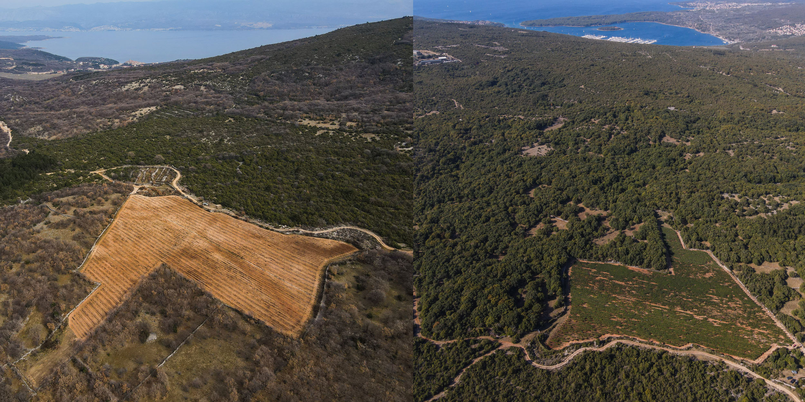
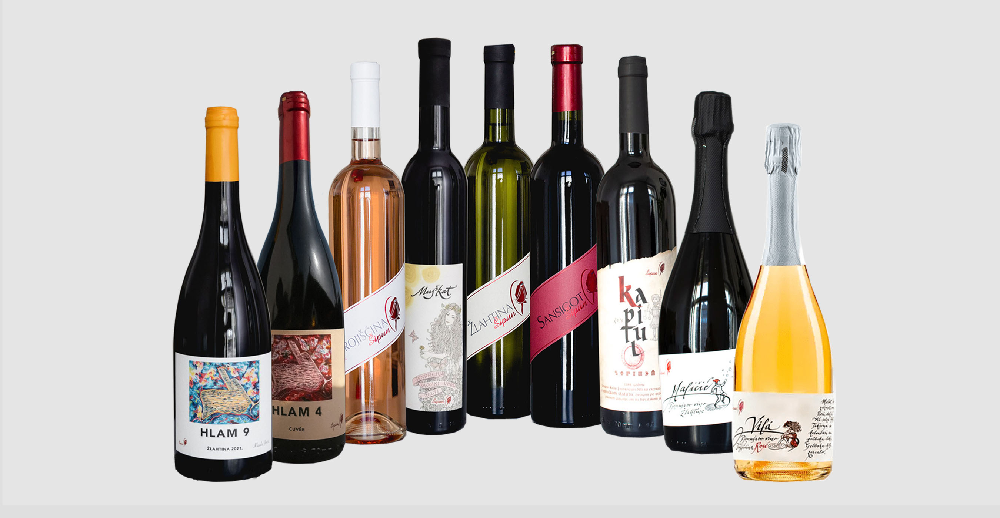
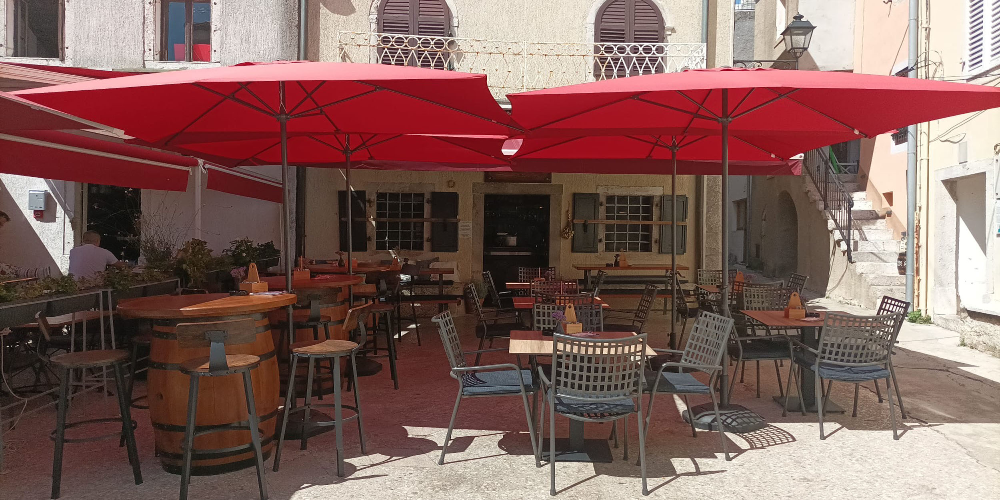

Mala vinarija velikih uspijeha...

O NAMA
Vinarstvo kao brend proživljavamo svakodnevno, ono postaje stil života, a posebno kod privatnih poduzetnika jer se najčešće teško očitava granica gdje prestaje vinarstvo, a počinje privatni dio dana.
VIŠE
NAŠA VINA
Etikete na bocama i one koje će se na njima tek naći, a i ono što imamo u bocama, neka bude trajni zalog Vrbniku, da mu vratimo ono što nam on daje... sebe.
VIŠE


WINE BAR
Pogledajte našu najnoviju priču gdje možete doći probati i doživjeti ono što stavramo.
VIŠE